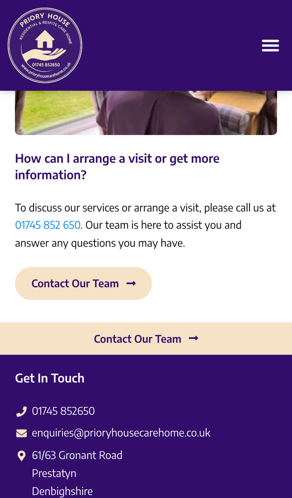

Priory House: easier for families to get in touch and visit
I went through your website on a phone, the way a son or daughter looking for a care home for a parent would, and read your homepage, FAQs, rooms, care services, staff and contact pages. It feels warm and personal, and it answers a lot of what families worry about. Where I think you'd save the team time, and fill rooms sooner, is how a family gets from reading the site to visiting.
What's already working
Three things I'd change
Let families book a visit online
Your FAQs say "To discuss our services or arrange a visit, please call us at 01745 852 650." Your contact page offers a message form, but there's no way to pick a time to come and look round.

Families often look in the evening, or from the other end of the country, when it's hard to ring. Being able to pick a time there and then keeps Priory House at the top of their list.
- They choose a time from the slots you set aside for show-rounds, and say who the visit is for.
- They get a confirmation with your address and who they'll meet, and a reminder the day before.
- The visit goes into your diary with their notes, so whoever shows them round knows what matters to them.
Tell families when a room comes free
Your rooms page describes "a variety of room options", with en suite bathrooms, TVs and French doors onto garden terraces. Nothing on the site says whether a room is free now, or lets a family ask to be told when one is.
An empty room costs the home every week it stands empty. A list of families who have already shown interest means a room can be offered the day it's ready.
- A family leaves their details and what they're looking for, such as an en suite or a room with garden doors, and roughly when.
- When you mark a room as free, everyone on the list who wants that kind of room gets a short message straight away.
- You see who is waiting, since when and what they asked for, all in one place.
Reply to every message straight away
Your contact form asks for a name, telephone, email and message, and the page says "our team is here to help. Get in touch today." Nothing on the page says what happens next or when they'll hear back.
A family writing in is often worried and short of time. A clear reply within a minute, at any hour, reassures them and saves the team answering the same first questions again.
- As soon as a message comes in, they get a friendly reply with answers to the common questions from your FAQs.
- The same reply links to the visit booking, so they can choose a time without waiting for a call.
- You get the message with their details, and anything that needs a person comes straight to the office.
Your website, answering for you
An assistant that answers the questions families ask again and again, at any hour. These answers come only from your own website: your homepage, FAQs and rooms page.
Anything it can't answer, it passes to you with the customer's details.
What happens next
For five local businesses I'm setting up one of these for free, in return for an honest review. Pick whichever would help most.
I'm Tom Williams and I run Tomoni-AI. If a 20-minute chat would help, reply to my email or give me a ring.
Call 07971 512158Email Tom